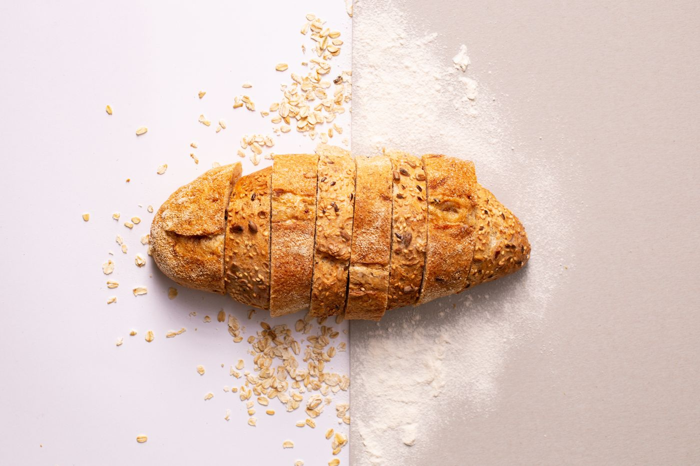

Primera parada / DesayunoEmpezar
Empezar
con pan.
Molletes y rebanadas de pan cateto forman parte de la propuesta de desayuno documentada. Para acompañarlos, las referencias mencionan mantecas y carne mechá.
Un desayuno con el que conocer la faceta más tempranera de la venta. Consulta por teléfono qué opciones se sirven el día de tu visita.
Consultar el desayuno